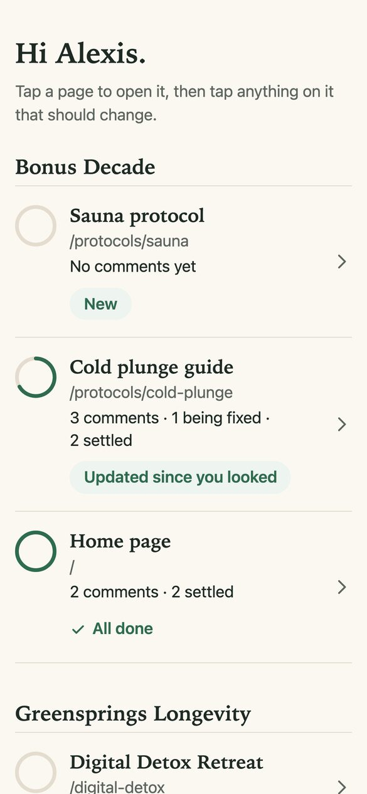
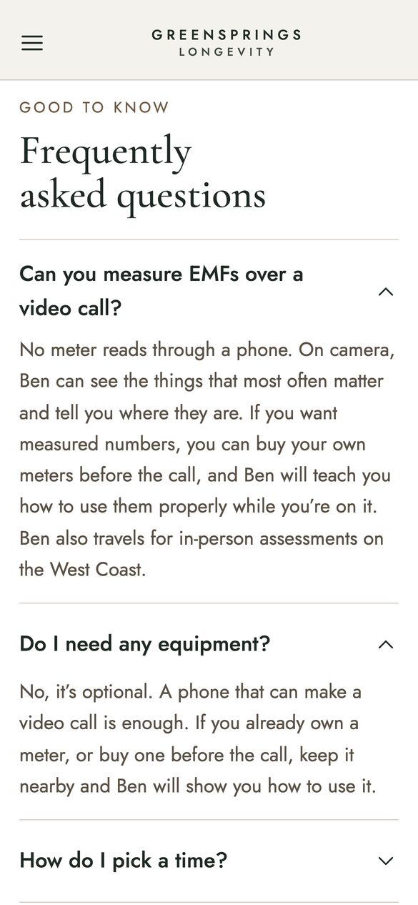

How it works
From a tap to a fix
Reviewers need no account and nothing to install. Ordinary visitors to your site never see any of it.
-
A reviewer taps
They open their private link, tap the spot that looks wrong and say what should change. A screenshot and the exact element come along.
-

You run one command
Your dashboard shows who has comments waiting and the command to run. In Claude Code,
/tap-to-fix:fixworks through them as a review cycle, one pull request per fix. -

They see it done
Each comment's status goes back to the reviewer as it's fixed, so they know what changed without asking.
Two dashboards
One for you, one for them


A real fix
“Before you book” became an FAQ
This implies they have to read all these questions before they book, when I think of it more as a FAQ and optional if they want the extra info. Can we work on a new title together and make sure it looks good with a design review? A comment tapped onto the Virtual EMF Assessment page at greensprings.life
Claude Code picked it up with /tap-to-fix:fix, ran a design review on the new heading, and shipped “Frequently asked questions” with a “Good to know” label. The comment showed as done on the reviewer's list.

Install
Set it up in a few minutes
You need Claude Code, Node 22 and a free Cloudflare account. Everything runs on your own account.
- Install the plugins in Claude Code. Tap to Fix uses Proofs for its review cycle.
/plugin marketplace add workingBen/proofs /plugin install proofs@proofs /plugin marketplace add workingBen/tap-to-fix /plugin install tap-to-fix@tap-to-fix
- Deploy your own service with
/tap-to-fix:setup. It creates one database, one storage bucket and one Worker on your Cloudflare account, and gives you a script tag and your owner link. - Add the script tag to your site's pages. Visitors see nothing; only someone with a reviewer link does.
- Add a reviewer on your dashboard, assign them pages, and text them their link.
The full quickstart covers content security policies and every option.
Your data
It stays on your account
- No hosted service. Comments, screenshots and reviewers live in your own Cloudflare database and bucket.
- Screenshots have no public address. Only you and the reviewer who took one can see it.
- Reviewer links keep their key after the
#, which browsers never send to your site's server or logs. - Limits on every write: comment size, screenshot size, and how many comments a reviewer can save a minute and a day. SECURITY.md lists them all.